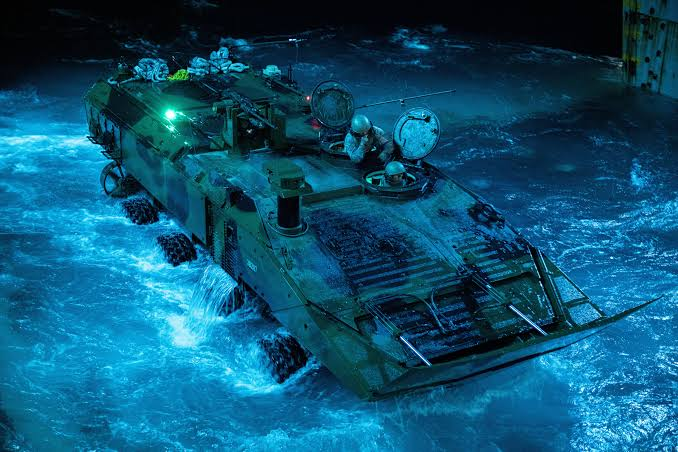
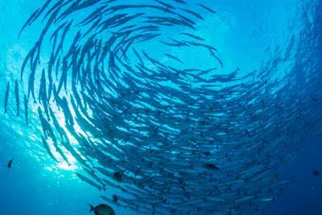

Kenya Marine Supplies Ltd is a Kenyan company that specializes in selling boats,providing marine transport services, and suppling marine and aquatic equipment.The company was established in 2010 in Mombasa to serve fishermen,boat opperators,tourism businesses, and shipping companies.
Our mission is to provide high-quality marine equipment and services to our customers in a timely and efficient manner, while maintaining the highest standards of safety and environmental responsibility.

Our vision is to be the leading provider of marine equipment and services in Kenya, recognized for our commitment to quality, safety, and customer satisfaction.
